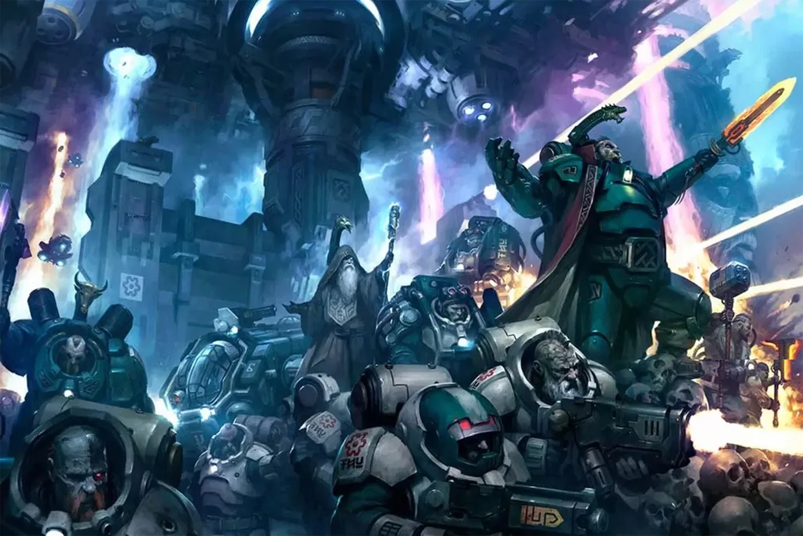
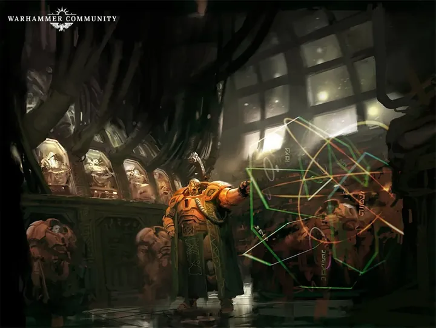
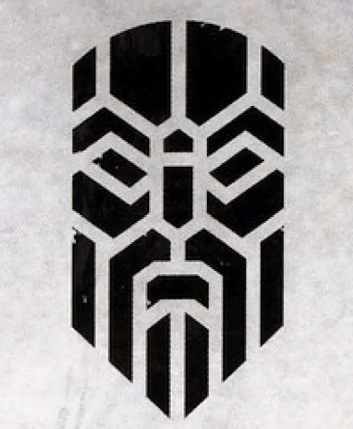
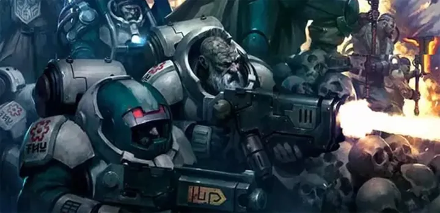
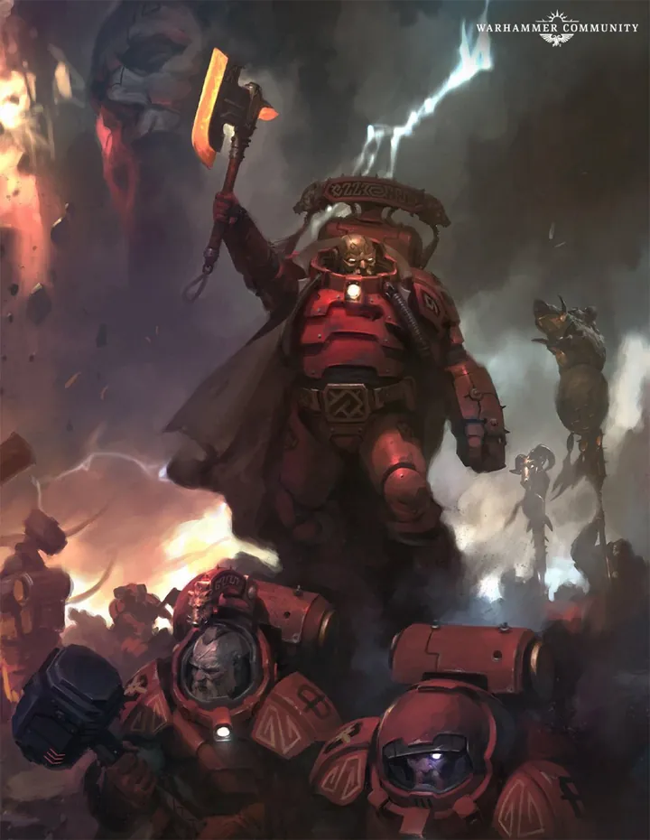
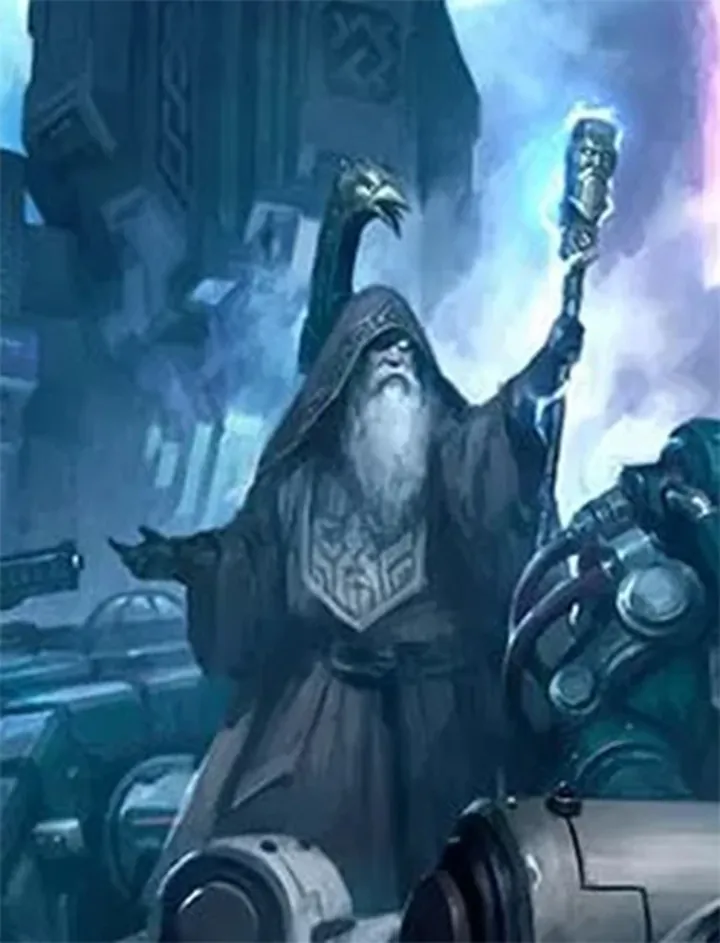
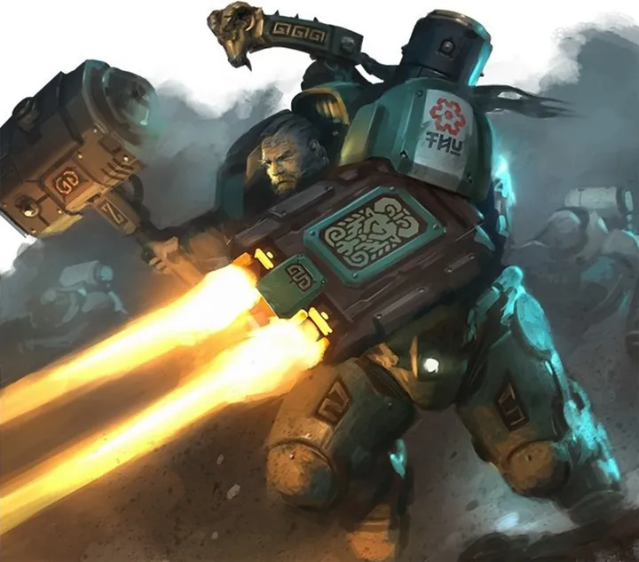
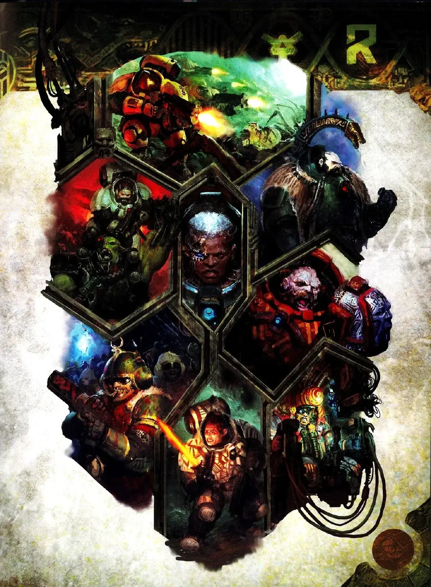

01ภาพรวม

ชาว Kin ตัวเตี้ยแต่แข็งแรง ผู้อาศัยในใจกลางกาแล็กซีและเคารพ 'บรรพบุรุษ' ที่เป็นเครื่องจักรอัจฉริยะ
02ต้นกำเนิด
ชาว Kin ถูกสร้างขึ้นหรือดัดแปลงมาจากมนุษย์ในยุคโบราณ พวกเขาอาศัยในใจกลางกาแล็กซี ทำเหมืองบนดาวที่มนุษย์ทั่วไปอยู่ไม่ได้ และเคารพ Votann — คอมพิวเตอร์อัจฉริยะที่เรียกว่า Ancestor Core
03เนื้อเรื่องเจาะลึก
Squats ที่กลับมา
ในเกมรุ่นเก่า มนุษย์ร่างเตี้ยกลุ่มนี้ชื่อ Squats และหายไปจากเนื้อเรื่อง (ถูกเล่าว่าถูก Tyranids กิน) ในรุ่น 9 พวกเขากลับมาในชื่อ Leagues of Votann พร้อมเนื้อเรื่องใหม่: สังคมมนุษย์ที่รอดจาก Age of Strife ใกล้ใจกลางกาแล็กซี และเป็นพันธมิตรที่ไม่ไว้ใจจักรวรรดิ
04ยุค 30K — ในยุค Great Crusade และ Horus Heresy
ยุค 30K ชาว Kin อยู่ในใจกลางกาแล็กซีซึ่งห่างไกลจาก Great Crusade และแทบไม่มีบทบาทในเหตุการณ์ Horus Heresy
ดูภาพรวมยุค 30K ทั้งหมดที่ เนื้อเรื่องยุค 30K และความต่างของสองยุคที่ เปรียบเทียบ 30K vs 40K
05นิสัยและวัฒนธรรม
- แบ่งเป็น League และ Kindred
- จดทุกหนี้แค้น (Grudge) ไว้ไม่ลืม
- มีหุ่นยนต์ช่วยงานชื่อ COG
- ทำการค้ากับทุกฝ่ายที่ไม่เป็นศัตรู
06จุดที่น่าสนใจ
- ในเกมยุคแรก เผ่านี้เคยชื่อ 'Squats' และถูกประกาศว่า Tyranids กินหมดแล้ว ก่อนที่จะกลับมาเป็น Leagues of Votann
07ความสามารถพิเศษ
สิ่งที่ทำให้ Leagues of Votann แตกต่างจากทัพอื่น — ทั้งพลังที่ติดตัวมาทั้งเผ่า/ทัพ และความสามารถของบุคคลสำคัญ
ของทั้งเผ่า/ทัพ

Ancestor Cores — บรรพบุรุษจักรกล
ปัญญาประดิษฐ์โบราณที่ Votann เคารพเหมือนบรรพบุรุษ เก็บความรู้จากยุค Dark Age of Technology ให้คำแนะนำและดูแลการสร้างลูกหลาน

ร่างกายที่ออกแบบมา
Kin ถูกดัดแปลงพันธุกรรมให้ทนแรงโน้มถ่วงสูง รังสี และสภาพแวดล้อมโหดร้ายใกล้ใจกลางกาแล็กซี มีอายุยืนหลายร้อยปี และจิตใจทนต่อพลัง Warp สูง

เทคโนโลยีจากยุคทอง
ยังเก็บเทคโนโลยีจาก Dark Age of Technology ที่จักรวรรดิลืมไปแล้ว — ชุดเกราะ Void Armour ปืนไอออน และ AI ที่ใช้งานได้จริง

ความแค้นที่จดจำตลอดไป
Votann ไม่ลืมการดูถูกหรือการทรยศ ทุก "Grudge" ถูกบันทึกและต้องชดใช้ ไม่ว่าจะนานแค่ไหน
ของบุคคลสำคัญ

Uthar the Destined
Kâhl แห่ง Greater Thurian Leagueผู้นำที่ทุกคนเชื่อว่าโชคชะตาอยู่ข้างเขา ทุกการตัดสินใจที่เสี่ยงดูเหมือนจะสำเร็จเสมอ
08หน่วยและบทบาทในกองทัพ
Leagues of Votann (Squats) คือมนุษย์ร่างเตี้ยที่ถูกปรับพันธุกรรมให้ทนอยู่ในโลกหนักใกล้ใจกลางกาแล็กซี สังคมถูกนำทางโดย Ancestor Core — ปัญญาประดิษฐ์โบราณที่พวกเขาบูชาเหมือนบรรพบุรุษ
Kâhl
คาห์ลแม่ทัพของ Kin (สังคม Votann) ฉลาด อดทน และเชื่อมกับ Ancestor Core

Brôkhyr Iron-master
บร็อคเฮียร์ ไอรอนมาสเตอร์"ช่าง" ของ Votann ผู้ซ่อมและสร้างอาวุธ เชี่ยวชาญเทคโนโลยีโบราณ มีหุ่นยนต์ผู้ช่วย

Grimnyr
กริมเนียร์ผู้ใช้พลังจิตที่ถูกฝึกให้มีจิตแข็งแกร่งต้าน Warp ทำหน้าที่เหมือนนักบวชและผู้พิทักษ์

Einhyr Champion
ไอน์เฮียร์ แชมเปียนนักรบชั้นยอดในชุดเกราะหนัก Exo-armour
Hearthkyn Warriors
ฮาร์ธคินวอร์ริเออร์ทหารหลักใช้ปืนไอออนและปืนกลอัตโนมัติ มีระบบคำนวณเป้าหมายในหมวก
Ancestor Core
แอนเซสเตอร์คอร์ปัญญาประดิษฐ์โบราณที่เก็บความรู้และความทรงจำของบรรพบุรุษ เป็นทั้ง "เทพ" และผู้วางแผนของเผ่า
09วีรกรรมและเหตุการณ์สำคัญ
Battle of Örgvayr
ต่อสู้กับ Chaos ใกล้พายุ Warp Örgvayr หลังเกิด Great Rift
10ตัวละครสำคัญ
Uthar the Destined
Kâhl แห่ง Greater Thurian Leagueผู้นำที่มีชื่อเสียง
11ยุค 40K — สหัสวรรษที่ 41
ยุค 40K Leagues of Votann ปกป้องดินแดนใจกลางกาแล็กซี
12เนื้อเรื่องล่าสุด (Era Indomitus / M42)
พายุ Warp ใหม่ ๆ ใจกลางกาแล็กซีกลืนระบบดาวของชาว Kin จำนวนมาก ทำให้พวกเขาต้องออกมาทำสงครามมากขึ้น
หลังการเกิด Great Rift ปฏิทินของจักรวรรดิคลาดเคลื่อน เหตุการณ์ยุคปัจจุบันจึงมักระบุเพียง 'M42' ไม่มีปีที่แน่นอน
13แกลเลอรี
